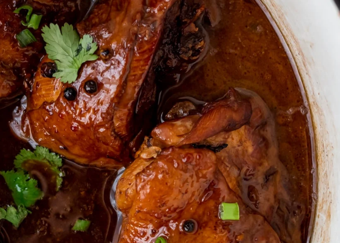

Adobong Manok Recipe

Ingredients:
- 3 lb chicken thighs
- 4 cloves garlic
- 3 tbsp oyster sauce
- 2 tbsp dark soy sauce
- ⅔ cup white vinegar
- 1 tbsp light brown sugar
- 2 bay leaves
- 2 tsp black peppercorns
Instructions:
- Heat 1 tablespoon of oil in a big pot. I used a Dutch oven. Add chicken thighs skin side down and sear on both sides.
- Once done searing the chicken, add the garlic, oyster sauce, and soy sauce. Mix to the coat the chicken.
- Add the vinegar, brown sugar, bay leaves, and peppercorns. Bring the liquid to a boil and lower to a simmer.
- Simmer on low heat for 1 hour. Flip the chicken every 20 minutes, so each side gets an even amount of color.
- Serve chicken over a bed of rice.